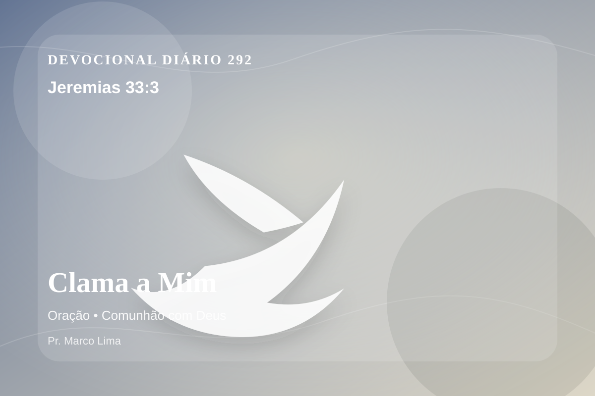

Clama a Mim
Clama a mim, e responder-te-ei, e anunciar-te-ei coisas grandes e ocultas, que não sabes.
Reflexão
Este devocional começa com uma pergunta séria: o que esta Palavra revela sobre Deus, sobre o pecado e sobre a necessidade de Cristo? No dia 292 do plano anual, o tema de oração deve levar você a olhar para Cristo, não apenas para si mesmo. A oração é comunhão antes de ser pedido. Por meio dela, o coração ansioso aprende a se render, a vontade humana se submete ao Pai, e a paz de Deus guarda pensamentos e afetos.
Esta Palavra ensina que Deus é santo e misericordioso. Ele confronta o pecado, mas também oferece perdão ao que se volta para Cristo com fé verdadeira. A reflexão cristã não termina em pensamento positivo; ela conduz ao Senhorio de Jesus, à cruz, à ressurreição e à nova vida que o Espírito Santo produz no coração.
Aprenda esta verdade com simplicidade: Deus não veio apenas ajustar alguns hábitos, mas resgatar a pessoa inteira. O pecado separa, engana e endurece; a graça de Cristo perdoa, reconcilia e ensina um novo caminho. Quem crê em Jesus não recebe licença para continuar igual, mas poder para nascer de novo e viver como filho de Deus.
Este é o evangelho: a salvação não nasce do desempenho humano, mas da obra perfeita de Cristo. Ele tomou sobre Si a culpa do pecado, venceu a morte e chama cada pessoa a responder com arrependimento e fé.
Se esta Palavra confronta você, não fuja. O confronto de Deus é graça. Ele fere o orgulho para curar a alma, revela o pecado para oferecer perdão e chama ao arrependimento para conduzir à vida.
O convite de Deus é claro: venha a Cristo. Não venha perfeito; venha arrependido. Não venha confiando em si mesmo; venha confiando na cruz e na ressurreição do Senhor Jesus.
Aplicação Prática
- Leia Jeremias 33:3 lentamente e destaque uma palavra ou expressão central do texto.
- Confesse a Deus um pecado, resistência ou frieza espiritual que esta Palavra revelou.
- Declare sua fé em Jesus Cristo e pratique hoje uma atitude concreta de arrependimento e obediência.
Para Orar
Senhor Deus, eu recebo a Tua Palavra em Jeremias 33:3 com reverência. Reconheço que preciso de arrependimento, perdão e nova vida. Creio que Jesus Cristo morreu pelos meus pecados e ressuscitou para me salvar. Lava meu coração, governa minha vida e conduz-me em obediência simples ao Teu evangelho. Em nome de Jesus. Amém.
{kind=link}